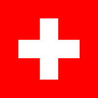

|  | ||
| Nama Resmi | : | Konfederasi Helvetika |
| Ibu Kota | : | Bern |
| Lagu Kebangsaan | : | Schweizerpsalm |
| Bentuk Pemerintahan | : | Republik Direktorial |
| Sistem Pemerintahan | : | Direktoral |
| Kemerdekaan | : | 1 Agustus 1291 |
| Kepala Negara | : | Dewan Federal |
| Bahasa Nasional | : | Jerman, Prancis, Italia, Romansh, dan Latin |
| Agama | : | Kristen, Katolik, Hindu, Budha, Islam, dan Yahudi |
| Mata Uang | : | Franc Swiss (SFr)(CHF) |
| Jumlah Penduduk | : | 8.403.994 (estimasi Juli 2020) |
Konfederasi Swiss adalah negara federal yang terdiri dari 26 kanton di Eropa Tengah. Swiss adalah negara berdaulat yang sebagian besar wilayahnya berada di Pegunungan Alpen
Nama resmi negara Swiss adalah Confoederatio Helvetica yang berarti Konfederasi Helvetika. Swiss dikenal sebagai negara netral namun tetap memiliki kerja sama internasional yang kuat
Bern memiliki status sebagai kota federal. Secara hukum, Swiss tidak memiliki ibu kota. Namun, parlemen federal dan pemerintah berada di Bern sedangkan pengadilan federal berada di kota lain